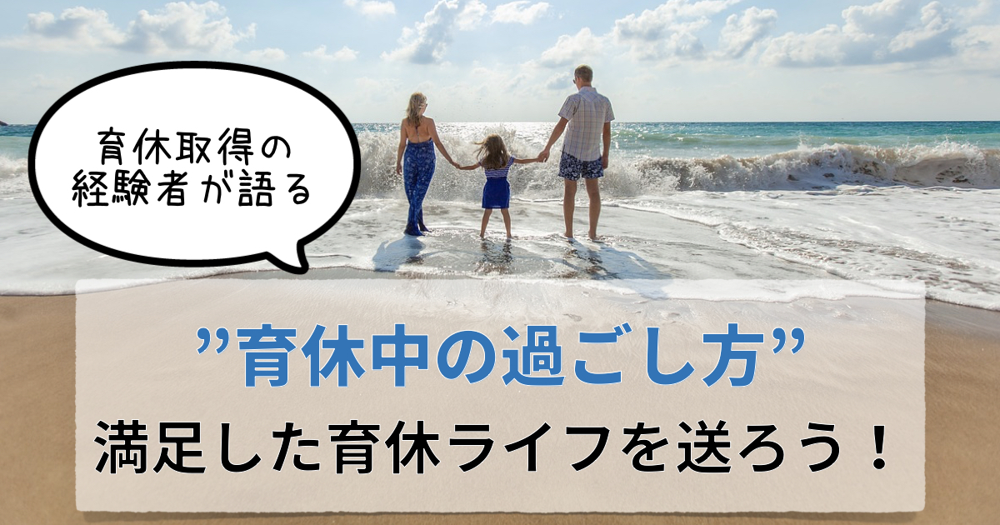

<!DOCTYPE html>
<html>
<head><meta name="generator" content="Hexo 3.9.0">
  <meta charset="utf-8">
  
<!-- Google Analytics -->
<script type="text/javascript">
(function(i,s,o,g,r,a,m){i['GoogleAnalyticsObject']=r;i[r]=i[r]||function(){
(i[r].q=i[r].q||[]).push(arguments)},i[r].l=1*new Date();a=s.createElement(o),
m=s.getElementsByTagName(o)[0];a.async=1;a.src=g;m.parentNode.insertBefore(a,m)
})(window,document,'script','//www.google-analytics.com/analytics.js','ga');

ga('create', 'UA-2714410-4', 'auto');
ga('require', 'linkid', 'linkid.js');
ga('send', 'pageview');

</script>
<!-- End Google Analytics -->


  
  <title>育休を2度取得した男性が語る”育休の過ごし方”【経験談】 | 共働き夫婦の楽らくライフ</title>
  <meta name="viewport" content="width=device-width, initial-scale=1, maximum-scale=1">
  
    <meta name="description" content="これから育休を取る男性の方で、育休中にどう過ごせば満足したものにできるか悩んでいませんか？ 一言で「満足」といっても色々ありますが、本記事では「育休中の心構え」と、実際にして良かった「具体的な過ごし方」をお伝えします。   育休中の心構えを2点 具体的な過ごし方を4点    私は2度の育休を取得した経験があり、今回紹介するような過ごし方で妻にも満足してもらっています。ぜひ参考にしていただければ">
<meta name="keywords" content="男性,育休,過ごし方,経験談">
<meta property="og:type" content="article">
<meta property="og:title" content="育休を2度取得した男性が語る”育休の過ごし方”【経験談】">
<meta property="og:url" content="https://tomoraku-life.com/parental-leave-how-to-spend/index.html">
<meta property="og:site_name" content="共働き夫婦の楽らくライフ">
<meta property="og:description" content="これから育休を取る男性の方で、育休中にどう過ごせば満足したものにできるか悩んでいませんか？ 一言で「満足」といっても色々ありますが、本記事では「育休中の心構え」と、実際にして良かった「具体的な過ごし方」をお伝えします。   育休中の心構えを2点 具体的な過ごし方を4点    私は2度の育休を取得した経験があり、今回紹介するような過ごし方で妻にも満足してもらっています。ぜひ参考にしていただければ">
<meta property="og:locale" content="ja">
<meta property="og:image" content="https://tomoraku-life.com/parental-leave-how-to-spend/thumnail_eyecatch.007.jpeg">
<meta property="og:updated_time" content="2019-08-07T15:00:00.000Z">
<meta name="twitter:card" content="summary_large_image">
<meta name="twitter:title" content="育休を2度取得した男性が語る”育休の過ごし方”【経験談】">
<meta name="twitter:description" content="これから育休を取る男性の方で、育休中にどう過ごせば満足したものにできるか悩んでいませんか？ 一言で「満足」といっても色々ありますが、本記事では「育休中の心構え」と、実際にして良かった「具体的な過ごし方」をお伝えします。   育休中の心構えを2点 具体的な過ごし方を4点    私は2度の育休を取得した経験があり、今回紹介するような過ごし方で妻にも満足してもらっています。ぜひ参考にしていただければ">
<meta name="twitter:image" content="https://tomoraku-life.com/parental-leave-how-to-spend/thumnail_eyecatch.007.jpeg">
<meta name="twitter:creator" content="@tomoraku_life">
  
  
    <link rel="alternate" href="/atom.xml" title="共働き夫婦の楽らくライフ" type="application/atom+xml">
  
  
    <link rel="icon" href="/images/favicon.ico">
  
  
    <link href="//fonts.googleapis.com/css?family=Source+Code+Pro" rel="stylesheet" type="text/css">
  
  <link rel="stylesheet" href="/css/style.css">
  <link href="https://fonts.googleapis.com/css?family=Concert+One" rel="stylesheet">
  <link rel="stylesheet" href="https://use.fontawesome.com/releases/v5.7.0/css/all.css">
  <script src="https://ajax.googleapis.com/ajax/libs/jquery/3.3.1/jquery.min.js"></script>
  <script src="/js/custom.js"></script>

  <script async src="//pagead2.googlesyndication.com/pagead/js/adsbygoogle.js"></script>
  <script>
     (adsbygoogle = window.adsbygoogle || []).push({
          google_ad_client: "ca-pub-7705145221063766",
          enable_page_level_ads: true
     });
  </script>
</head>
</html>
<body>
  <div id="container">
    <div id="wrap">
      <header id="header">
  <div id="banner"></div>
  <div id="header-outer" class="outer">
    <div id="header-title" class="inner">
      <h1 id="logo-wrap">
        <!--<a href="/" id="logo">共働き夫婦の楽らくライフ</a>-->
        <a href="/" id="logo"></a>
      </h1>
      
        <h2 id="subtitle-wrap">
          <a href="/" id="subtitle">現代を生きる多忙な共働き世帯が、いかに楽して楽しく生活できるかを考えるブログです</a>
        </h2>
      
    </div>
    <div id="header-inner" class="inner">
      <nav id="main-nav">
        
          <a class="main-nav-link" href="/categories/育休パパの経験談/">育休パパの経験談</a>
        
          <a class="main-nav-link" href="/categories/株主優待生活/">株主優待生活</a>
        
          <a class="main-nav-link" href="/categories/資産運用/">資産運用</a>
        
          <a class="main-nav-link" href="/categories/マイホーム/">マイホーム</a>
        
          <a class="main-nav-link" href="/about-this-page">プロフィール</a>
        
      </nav>
      <nav id="sub-nav">
        
          <a id="nav-rss-link" class="nav-icon" href="/atom.xml" title="RSSフィード"></a>
        
        <a id="nav-search-btn" class="nav-icon" title="検索"></a>
      </nav>
      <div id="search-form-wrap">
        <form action="//google.com/search" method="get" accept-charset="UTF-8" class="search-form"><input type="search" name="q" class="search-form-input" placeholder="Search"><button type="submit" class="search-form-submit">&#xF002;</button><input type="hidden" name="sitesearch" value="https://tomoraku-life.com"></form>
      </div>
    </div>
  </div>
</header>
      <div class="outer">
        <section id="main"><article id="post-parental-leave-how-to-spend" class="article article-type-post" itemscope itemprop="blogPost">

  <div class="article-inner">
    
    
      <header class="article-header">
        
  

    <ul class="breadcrumb">
        <li itemscope="itemscope" itemtype="http://data-vocabulary.org/Breadcrumb">
        <a href="/" itemprop="url">
         <span itemprop="title">ホーム</span>
        </a>
        </li>
        <li itemscope="itemscope" itemtype="http://data-vocabulary.org/Breadcrumb">
        <a href="/categories/育休パパの経験談" itemprop="url">
         <span itemprop="title">育休パパの経験談</span>
        </a>
        </li>
        <li itemscope="itemscope" itemtype="http://data-vocabulary.org/Breadcrumb">
        <a href="" itemprop="url">
         <span itemprop="title"></span>
        </a>
        </li>
    </ul>

    <h1 class="article-title" itemprop="name">
      育休を2度取得した男性が語る”育休の過ごし方”【経験談】
    </h1>

    <div class="article-date">
        <time datetime="2019-08-07T15:00:00.000Z" itemprop="datePublished" class="published">2019.08.08</time>
        
          <time datetime="2019-08-07T15:00:00.000Z" itemprop="dateModified" class="modified">2019.08.08</time>
        
    </div>
    
    

      </header>
    

    
      <div class="sns_buttons">
    
<ul class="shareList">
  <li class="shareList__item"><a class="shareList__link icon-twitter" href="https://twitter.com/intent/tweet?text=育休を2度取得した男性が語る”育休の過ごし方”【経験談】 https://tomoraku-life.com/parental-leave-how-to-spend/index.html" onClick="window.open(encodeURI(decodeURI(this.href)),'twwindow','width=550, height=450, personalbar=0, toolbar=0, scrollbars=1'); return false;" target="_blank" title="Twitter"></a></li>
  <li class="shareList__item"><a class="shareList__link icon-facebook" href="http://www.facebook.com/share.php?u=https://tomoraku-life.com/parental-leave-how-to-spend/index.html" onClick="window.open(encodeURI(decodeURI(this.href)),'fbwindow','width=550, height=450, personalbar=0, toolbar=0, scrollbars=1'); return false;" target="_blank" title="Facebook"></a></li>
  <li class="shareList__item"><a class="shareList__link icon-hatebu" href="http://b.hatena.ne.jp/add?mode=confirm&url=https://tomoraku-life.com/parental-leave-how-to-spend/index.html&title=育休を2度取得した男性が語る”育休の過ごし方”【経験談】" target="_blank" title="はてなブックマーク"></a></li>
  <li class="shareList__item"><a class="shareList__link icon-line" href="http://line.me/R/msg/text?育休を2度取得した男性が語る”育休の過ごし方”【経験談】 https://tomoraku-life.com/parental-leave-how-to-spend/index.html" target="_blank" title="LINE"></a></li>
</ul>
</div>

    

    <div class="article-entry" itemprop="articleBody">
      
        

<p>これから育休を取る男性の方で、育休中にどう過ごせば満足したものにできるか悩んでいませんか？</p>
<p>一言で「満足」といっても色々ありますが、本記事では「育休中の心構え」と、実際にして良かった「具体的な過ごし方」をお伝えします。</p>
<div class="bullet1">
<ul>
<li>育休中の心構えを2点</li>
<li>具体的な過ごし方を4点</li></ul></div>


<p>私は2度の育休を取得した経験があり、今回紹介するような過ごし方で妻にも満足してもらっています。ぜひ参考にしていただければ幸いです。</p>
<a id="more"></a>

<div class="toc">

<!-- toc -->

<ul>
<li><a href="#yu-xiu-noguo-gosifang-noxin-gou-e">育休の過ごし方の心構え</a><ul>
<li><a href="#qi-noxin-shen-nozhuang-tai-woli-jie-suru">妻の心身の状態を理解する</a></li>
<li><a href="#you-xian-shun-wei-woda-qie-nisuru">優先順位を大切にする</a></li>
</ul>
</li>
<li><a href="#yu-xiu-zhong-noguo-gosifang">育休中の過ごし方</a><ul>
<li><a href="#jia-shi-hafu-gaduo-menidan-u">家事は夫が多めに担う</a></li>
<li><a href="#fu-fu-deyutukuriguo-gosushi-jian-womotu">夫婦でゆっくり過ごす時間をもつ</a></li>
<li><a href="#fu-fu-deohu-i1-ren-ninarerushi-jian-womotu">夫婦でお互い1人になれる時間をもつ</a></li>
<li><a href="#amatutashi-jian-nizi-ji-yan-zuan-wosuru">あまった時間に自己研鑽をする</a></li>
</ul>
</li>
<li><a href="#matome">まとめ</a></li>
</ul>
<!-- tocstop -->

</div>

<h2><span id="yu-xiu-noguo-gosifang-noxin-gou-e">育休の過ごし方の心構え</span><a href="#yu-xiu-noguo-gosifang-noxin-gou-e" class="header-anchor">#</a></h2><p></p>
<p>具体的にどういう風に過ごすかの前に「心構え」が重要だと思っています。</p>
<p>子供が生まれると生活の仕方をガラッと変化させる必要がありますが、まずは行動よりも先に考えを入れ替えないとストレスになってしまいがちだからです。</p>
<h3><span id="qi-noxin-shen-nozhuang-tai-woli-jie-suru">妻の心身の状態を理解する</span><a href="#qi-noxin-shen-nozhuang-tai-woli-jie-suru" class="header-anchor">#</a></h3><p>出産による体のダメージやホルモンバランスの変化により妻の心身は弱っています。</p>
<p>妻の体は出産により大きな手術を行ったくらいのダメージを負っており、出産の状況にもよりますが完全に元の体に戻るまで通常2か月程度かかると言われています。つまり、全治2か月です。妻は、夫（自分）よりも体を動かすのがツライ状態であることを心得ておきましょう。</p>
<p>さらに、ホルモンバランスの急激な変化によりメンタルがネガティブかつ攻撃的になりやすくなっています。これは、通称、ガルガル期と呼ばれているものです。</p>
<p>これについてはこちらの記事で詳しく説明していますので、良ければ併せてご覧ください。</p>
<div class="blog-card"><a href="/parental-leave-conjugal-relations/"><div class="blog-card-thumbnail"></div><div class="blog-card-content"><div class="blog-card-title">男性はただ育休を取ればいい訳ではなはい。家族の絆を深める秘訣とは？ </div></div><div class="clear"></div></a></div>

<h3><span id="you-xian-shun-wei-woda-qie-nisuru">優先順位を大切にする</span><a href="#you-xian-shun-wei-woda-qie-nisuru" class="header-anchor">#</a></h3><p>育休中は基本的に、自分のことよりも「家族（妻と赤ちゃん）」が優先です。</p>
<p>もちろん、会社を休んでいる間にキャリアダウンをさせないための勉強や資格取得は重要です。しかし、育休はあくまで家族を優先するために取得したものであり、優先事項は家族であることを心得ましょう。</p>
<p>私は以下のような優先度で考えて過ごしました。家事・育児や家族と過ごす時間を削ってまで自己研鑽はしないようにしています。また、家族と楽しく過ごすためには体調も重要なのでリフレッシュも重視だと考えています。</p>
<ul>
<li>家事・育児 ＞ 家族と過ごす時間 ＞ リフレッシュ ＞ 自己研鑽</li>
</ul>
<h2><span id="yu-xiu-zhong-noguo-gosifang">育休中の過ごし方</span><a href="#yu-xiu-zhong-noguo-gosifang" class="header-anchor">#</a></h2><p></p>
<h3><span id="jia-shi-hafu-gaduo-menidan-u">家事は夫が多めに担う</span><a href="#jia-shi-hafu-gaduo-menidan-u" class="header-anchor">#</a></h3><p>育休中は家事を夫婦で協力して行いますが、夫の方が多めに家事を担いましょう。</p>
<p>理由は2つあります。</p>
<p>1つ目は、前にも述べた通り産後の妻の心身は弱っているからです。妻は出産により体にダメージを負っており、さらにメンタルが弱い状態になっています。出産により体調の変化のない夫の方が元気なはずです。</p>
<p>2つ目は、赤ちゃんのお世話を担う比重は妻が大きくなるからです。妻は約3時間間隔で赤ちゃんに授乳をします。これだけでも睡眠不足によりかなりストレスがかかっています。</p>
<p>家事は夫が積極的に担うようにし、妻には体を休めてもらう努力をしましょう。</p>
<h3><span id="fu-fu-deyutukuriguo-gosushi-jian-womotu">夫婦でゆっくり過ごす時間をもつ</span><a href="#fu-fu-deyutukuriguo-gosushi-jian-womotu" class="header-anchor">#</a></h3><p>1日1回は夫婦で一緒にゆっくり過ごす時間をもちましょう。</p>
<p>育休中は赤ちゃんのお世話に家事とで結構忙しくて、同じ家に住んでいるのに気づいたら夫婦でゆっくりと会話をしてないことも。</p>
<p>朝と夜は大忙しなので、日中にゆっくり過ごす時間をもつことがオススメです。</p>
<p>私のウチでは「15時くらいにカフェインレスコーヒーとお菓子を用意して夫婦でまったりする」ことを実践してました。</p>
<h3><span id="fu-fu-deohu-i1-ren-ninarerushi-jian-womotu">夫婦でお互い1人になれる時間をもつ</span><a href="#fu-fu-deohu-i1-ren-ninarerushi-jian-womotu" class="header-anchor">#</a></h3><p>1人の時間は最高のリフレッシュです。</p>
<p>赤ちゃんの小さいうちは基本的に24時間体制で赤ちゃんとずっと一緒にいますが、じわじわと疲れが溜まっているものです。</p>
<p>こんな時に、ときどき、1人でカフェにいったり散歩をすると気分がスッと楽になります。</p>
<p><strong>とくに妻は授乳があるので、1人の時間は意識してとらないと取れないです</strong>。あらかじめ妻がカフェにいく時間などを予定しておくと良いです。妻の外出中、夫（自分）は赤ちゃんと2人で過ごす練習にもなります。</p>
<p>毎日はさすがに難しいですが、1週間に1度くらいで1〜2時間の「自分1人の時間」を持つことがオススメです。</p>
<h3><span id="amatutashi-jian-nizi-ji-yan-zuan-wosuru">あまった時間に自己研鑽をする</span><a href="#amatutashi-jian-nizi-ji-yan-zuan-wosuru" class="header-anchor">#</a></h3><p>会社を休んでいる間にキャリアダウンをさせないための勉強や資格取得は大切です。</p>
<p>しかし、家事・育児や家族との時間を優先した結果、日によっては自己研鑽の時間を取れないこともあります。これは優先度の高い「家族」を優先した結果であり、私は自己研鑽の時間を取れなくても「仕方がない」と考えてストレスを溜めないようにようにしています。</p>
<p>男性の育休経験者は「育休中は自分の時間が減った」と口を揃えて言いますが、自己研鑽にあてる時間の確保をなかなかできないことが理由だと思っています。</p>
<p>1時間などとまとまった時間の確保は困難なため、読書などの「さっと始められて」「すぐに中断できる」ものを選んで取り組むことがオススメです。</p>
<h2><span id="matome">まとめ</span><a href="#matome" class="header-anchor">#</a></h2><p>育休を満足して過ごすための心構えとして以下の2点と、</p>
<div class="bullet1">
<ul>
<li>妻の心身の状態を理解する</li>
<li>優先順位は、家事・育児 ＞ 家族と過ごす時間 ＞ リフレッシュ ＞ 自己研鑽</li></ul></div>


<p>具体的な行動として以下の4点を解説しました。</p>
<div class="bullet1">
<ul>
<li>家事は夫が多めに担う</li>
<li>夫婦でゆっくり過ごす時間をもつ</li>
<li>夫婦でお互い1人になれる時間をもつ</li>
<li>あまった時間で自己研鑽をする</li></ul></div>


<div class="talk"><div class="faceicon"><div class="name">コマ</div></div><div class="chatting"><div class="says">
<p>私はすごく充実した育休を過ごせたと思っています。なにが重要かは家庭それぞれなのでまったく同じじゃないかもですが、ぜひ参考にしていただければ幸いです。</p>
</div></div></div>

<div class="blog-card"><a href="/parental-leave-conjugal-relations/"><div class="blog-card-thumbnail"></div><div class="blog-card-content"><div class="blog-card-title">男性はただ育休を取ればいい訳ではなはい。家族の絆を深める秘訣とは？ </div></div><div class="clear"></div></a></div>
<div class="blog-card"><a href="/parental-leave-one-day/"><div class="blog-card-thumbnail"></div><div class="blog-card-content"><div class="blog-card-title">実録、育休を取得した男性サラリーマンの一日。自由時間は意外と少ないよという話。 </div></div><div class="clear"></div></a></div>
<div class="blog-card"><a href="/parental-leave-mind-change/"><div class="blog-card-thumbnail"></div><div class="blog-card-content"><div class="blog-card-title">男性が育休を取得するまでの迷いとは？私はこうしてマインドチェンジをしました。 </div></div><div class="clear"></div></a></div>


      
    </div>

    
      <div class="sns_buttons">
    
      この記事が気に入ったら友達にシェアしよう
    
<ul class="shareList">
  <li class="shareList__item"><a class="shareList__link icon-twitter" href="https://twitter.com/intent/tweet?text=育休を2度取得した男性が語る”育休の過ごし方”【経験談】 https://tomoraku-life.com/parental-leave-how-to-spend/index.html" onClick="window.open(encodeURI(decodeURI(this.href)),'twwindow','width=550, height=450, personalbar=0, toolbar=0, scrollbars=1'); return false;" target="_blank" title="Twitter"></a></li>
  <li class="shareList__item"><a class="shareList__link icon-facebook" href="http://www.facebook.com/share.php?u=https://tomoraku-life.com/parental-leave-how-to-spend/index.html" onClick="window.open(encodeURI(decodeURI(this.href)),'fbwindow','width=550, height=450, personalbar=0, toolbar=0, scrollbars=1'); return false;" target="_blank" title="Facebook"></a></li>
  <li class="shareList__item"><a class="shareList__link icon-hatebu" href="http://b.hatena.ne.jp/add?mode=confirm&url=https://tomoraku-life.com/parental-leave-how-to-spend/index.html&title=育休を2度取得した男性が語る”育休の過ごし方”【経験談】" target="_blank" title="はてなブックマーク"></a></li>
  <li class="shareList__item"><a class="shareList__link icon-line" href="http://line.me/R/msg/text?育休を2度取得した男性が語る”育休の過ごし方”【経験談】 https://tomoraku-life.com/parental-leave-how-to-spend/index.html" target="_blank" title="LINE"></a></li>
</ul>
</div>

    

    <div class="article-entry">
      <!-- Google Adsense -->
      <script async src="https://pagead2.googlesyndication.com/pagead/js/adsbygoogle.js"></script>
      <!-- ディスプレイ(記事の終わり) -->
      <ins class="adsbygoogle"
          style="display:block"
          data-ad-client="ca-pub-7705145221063766"
          data-ad-slot="8691379280"
          data-ad-format="auto"
          data-full-width-responsive="true"></ins>
      <script>
          (adsbygoogle = window.adsbygoogle || []).push({});
      </script>
      <!-- Google Adsense -->
    </div>

    <div class="article-entry">
      <h3>関連する記事</h3>
      <!-- Google Adsense -->
      <script async src="https://pagead2.googlesyndication.com/pagead/js/adsbygoogle.js"></script>
      <ins class="adsbygoogle"
          style="display:block"
          data-ad-format="autorelaxed"
          data-ad-client="ca-pub-7705145221063766"
          data-ad-slot="6224465210"></ins>
      <script>
          (adsbygoogle = window.adsbygoogle || []).push({});
      </script>
      <!-- Google Adsense -->
    </div>

    <footer class="article-footer">
      
    </footer>

  </div>
</article>

</section>
        
          <aside id="sidebar">
  
    <div class="widget-wrap">
  <h3 class="widget-title">自己紹介</h3>
  <div class="widget">
    <div class="profile">
      
      <p>コマ</p>
    </div>
    <p>
      妻と子供２人とマイホームで暮らし、日々「いかに楽して」「いかに楽しく」生活できるかを考えています。
      子供が産まれたタイミングで育休を取得したことで人生が豊かになりました。
    </p>
    <div style="text-align: center;">
      <a href="https://twitter.com/tomoraku_life?ref_src=twsrc%5Etfw" class="twitter-follow-button"
        data-show-count="false">Follow @tomoraku_life</a>
      <script async src="https://platform.twitter.com/widgets.js" charset="utf-8"></script>
    </div>
    <p>
      お問い合わせ・ご連絡はTwitterのDMにてお受けします。
    </p>
  </div>
</div>
  
    <div class="widget-wrap">
  <h3 class="widget-title">当ブログのアピール</h3>
  <div class="widget">
    <p>
      <strong>
        <ol>
          <li>累計80万PV達成！</li>
          <li>Googleアドセンス収益、累計30万円達成！</li>
        </ol>
      </strong>
    </p>
    <p>
      読者のみなさまのおかげです。これからもお役に立てる記事を書いていきますので、どうぞよろしくお願いします！
    </p>
  </div>
</div>
  
    
  <div class="widget-wrap">
    <h3 class="widget-title">カテゴリ</h3>
    <div class="widget">
      <ul class="category-list"><li class="category-list-item"><a class="category-list-link" href="/categories/Apple製品/">Apple製品</a><span class="category-list-count">12</span></li><li class="category-list-item"><a class="category-list-link" href="/categories/ふるさと納税/">ふるさと納税</a><span class="category-list-count">5</span></li><li class="category-list-item"><a class="category-list-link" href="/categories/ブログ運営/">ブログ運営</a><span class="category-list-count">2</span></li><li class="category-list-item"><a class="category-list-link" href="/categories/プログラミング/">プログラミング</a><span class="category-list-count">3</span></li><li class="category-list-item"><a class="category-list-link" href="/categories/マイホーム/">マイホーム</a><span class="category-list-count">13</span></li><li class="category-list-item"><a class="category-list-link" href="/categories/妊活／不妊治療/">妊活／不妊治療</a><span class="category-list-count">4</span></li><li class="category-list-item"><a class="category-list-link" href="/categories/子育て/">子育て</a><span class="category-list-count">5</span></li><li class="category-list-item"><a class="category-list-link" href="/categories/日記/">日記</a><span class="category-list-count">17</span></li><li class="category-list-item"><a class="category-list-link" href="/categories/株主優待生活/">株主優待生活</a><span class="category-list-count">8</span></li><li class="category-list-item"><a class="category-list-link" href="/categories/生活の知恵/">生活の知恵</a><span class="category-list-count">32</span></li><li class="category-list-item"><a class="category-list-link" href="/categories/育休パパの経験談/">育休パパの経験談</a><span class="category-list-count">12</span></li><li class="category-list-item"><a class="category-list-link" href="/categories/読書/">読書</a><span class="category-list-count">1</span></li><li class="category-list-item"><a class="category-list-link" href="/categories/資産運用/">資産運用</a><span class="category-list-count">8</span></li><li class="category-list-item"><a class="category-list-link" href="/categories/音楽/">音楽</a><span class="category-list-count">5</span></li></ul>
    </div>
  </div>


  
</aside>
        
      </div>
      <footer id="footer">
  
  <div class="outer">
    <div id="footer-info" class="inner">
      &copy; 2019 共働き夫婦の楽らくライフ
    </div>
  </div>
</footer>

      <div id="menu">
        <div class="menu-title">
          <a href="/"></a>
        </div>
        <a id="main-nav-toggle" class="nav-icon"></a>
      </div>
      <div id="page_top"><a href="#"></a></div>
    </div>
    <nav id="mobile-nav">
  
    <a href="/categories/育休パパの経験談/" class="mobile-nav-link">育休パパの経験談</a>
  
    <a href="/categories/株主優待生活/" class="mobile-nav-link">株主優待生活</a>
  
    <a href="/categories/資産運用/" class="mobile-nav-link">資産運用</a>
  
    <a href="/categories/マイホーム/" class="mobile-nav-link">マイホーム</a>
  
    <a href="/about-this-page" class="mobile-nav-link">プロフィール</a>
  
</nav>
    

<script src="//ajax.googleapis.com/ajax/libs/jquery/2.0.3/jquery.min.js"></script>


<script src="/js/script.js"></script>


  </div>
</body>
</html>